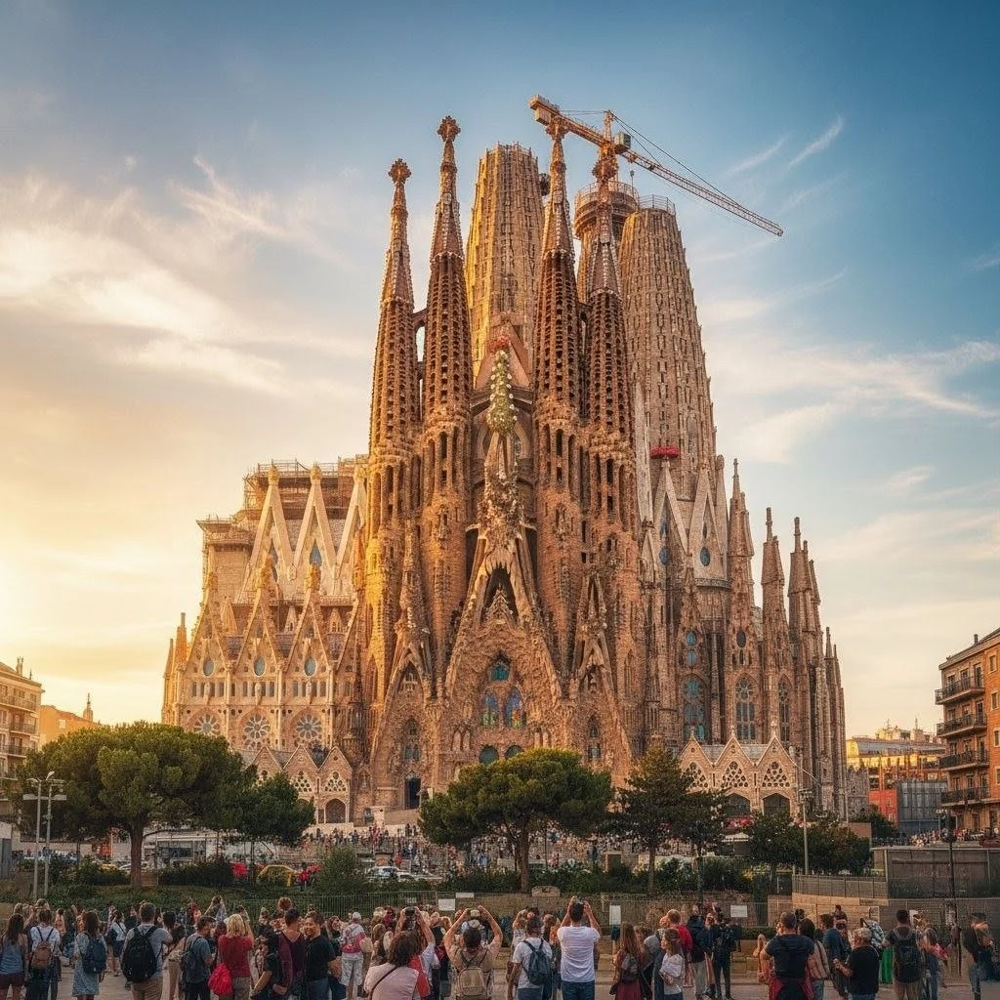
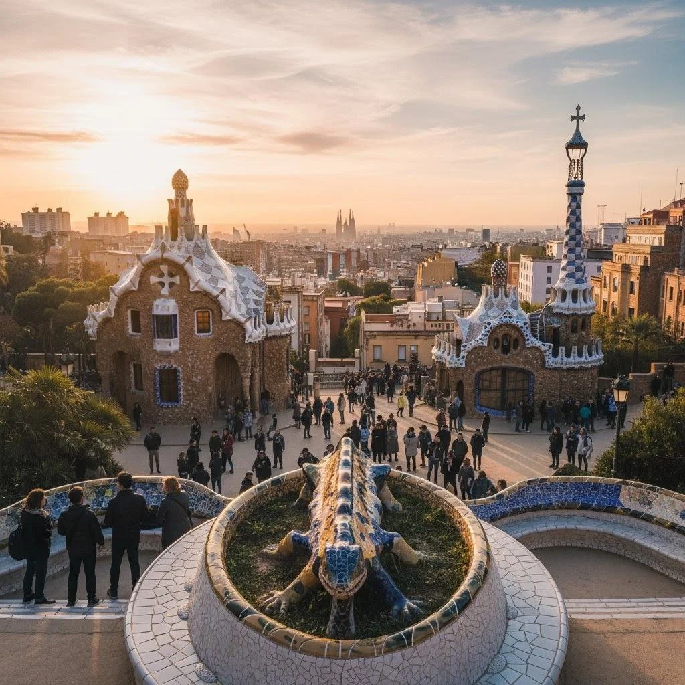
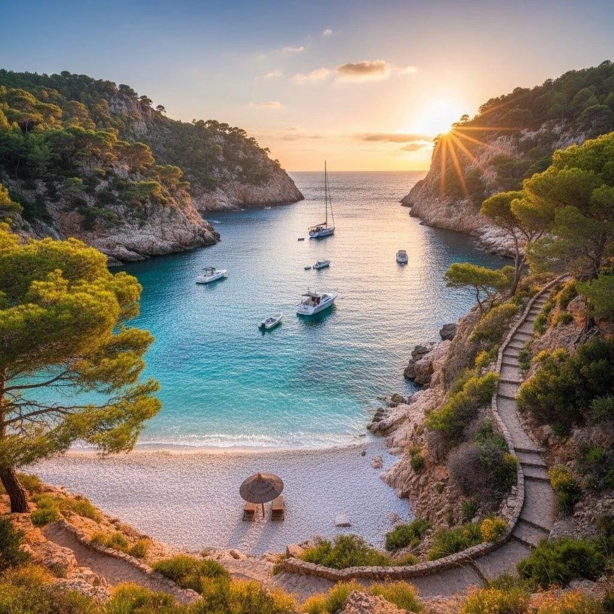
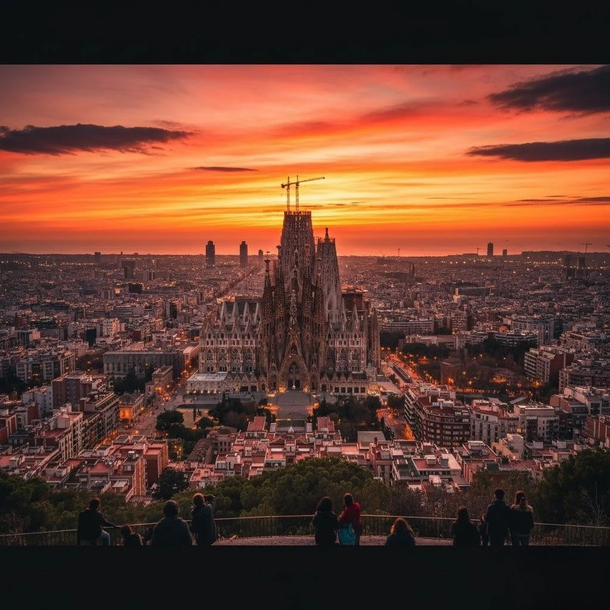

Barcelona & Costa Brava — 6 días
Combinación de ciudad y litoral: Gaudí, barrios con vida y la espectacular Costa Brava.

Resumen del viaje
Visitas a monumentos emblemáticos, paseos por barrios tradicionales y excursión a calas de la Costa Brava.
Itinerario día a día
- Día 1: Llegada y paseo por Las Ramblas.
- Día 2: Sagrada Familia, Park Güell y rutas modernistas.
- Día 3: Barrio Gótico y museos.
- Día 4: Excursión a la Costa Brava.
- Día 5: Tiempo libre y experiencia gastronómica.
- Día 6: Regreso.
Incluye
- Alojamiento y traslados según paquete
- Guía local en español (días principales)
Precio referencial: desde USD 820 (sujeto a temporada)
Solicitar cotizaciónGalería


